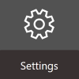
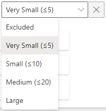

Modify the Identity Data Model
How to make data model properties evolve according to the organization's needs.
Overview
The identity data model must contain all the information needed to manage identities and their permissions, and only the information strictly required for this purpose.
You already considered the data needed for identity management during:
- The initial identities loading and the creation of the identity repository; See the Create the Workforce Repository topic for additional information.
- Model the Data through connector modeling which is the analysis phase before connector creation;
- Create an Entity Type which is the technical implementation of the connector model.
The data model established during these steps might change to evolve alongside the needs of the connected systems, the management strategy, and any change in the organization such as a change of structure, a new division, etc.
This part is about integrating these changes in the existing data model.
Dimensions
Identity Manager calls dimensions the attributes that assignment rules rely on. They are essential criteria that differentiate users in order to give them the appropriate roles. See the Conforming Assignments topic for additional information.
Personal data security
Only professional data should be used in the identity data model, not personal data.
Participants and Artifacts
Integrators are able to perform an identity update if they master the new data model.
| Input | Output |
|---|---|
| Initial identities loading (required) New identity data model (required) |
Updated identity data model |
See the Create the Workforce Repository topic for additional information.
Add or Modify Properties
The data model can be updated in the UI via a feature scanning the data model. This scan performs an analysis on the data previously imported through the Excel file. It detects properties which are always empty and suggests to remove them from the data model, for clarity purposes.
For example, some systems don't store phone numbers. Then, scanning the data model will allow Identity Manager to suggest removing the property about phone numbers. Note that Identity Manager only provides suggestions but makes no decision. You could choose to keep the phone number property anyway in order to fill it later.
NETWRIX recommends updating the data model through the scan feature, as this feature is driven by Identity Manager's suggestions.
However, the identity data model can also be updated through the directory's entity types, following the previously given Create an Entity Type.
Through a data model scan
Add or modify properties within the identity data model by proceeding as follows:
-
On the home page, click on Settings in the Configuration section.

-
Access the data model on the Workforce > Data Model page.
-
Change the display option to show or hide properties in the identity repository.

-
After your changes are complete, click on the Save icon at the top.
-
Click on the Reload button to apply the recent changes to the application.
Delete Properties
Integrators should keep in mind that the fields that they want to delete might be used in connectors or other places they didn't think about. Existing assignments might be impacted.
Identity Manager suggests the removal only of empty fields. In this case, there is nothing to worry about.
Verify Data Model Modification
In order to verify the process:
-
Check manually a sample in the user directory accessible from the home page. You should verify at least your own sheet and the sheets assigned to your hierarchy.

-
Check that every organization still has a manager. Organizations are accessible in the department directory accessible from the home page.


If the system contains numerous organizations, it is also possible to list them with their managers through the Query module. See the Generate Reports topic for additional information.
-
Generate Reports with indicators, for example, on the number of workers per type or per organization (through Identity Manager's predefined reports, the Query module or Power BI), to ensure that Identity Manager's content sticks to reality.